Documentación Cliente¶
Introducción general¶
UDrive es una aplicación para la administración de cualquier tipo archivos. Entre sus caracteristicas se destaca el versionado de archivos, la posibilidad de etiquetar los archivos para poder realizar búsquedas por ellos y por otros tantos criterios. Ademas permite la posibilidad de que sus usuarios compartan sus archivos entre si.
Funcionalidades incluidas¶
- Creación de usuarios
- Modificación de datos del perfil del usuario
- Eliminar usuario
- Compartir archivos
- Almacenamiento y descarga de archivos
- Versionado de archivos
- Búsqueda de archivos por extensión, nombre, propietario y etiqueta
- Papelera de reciclaje de archivos
- Visualizar información de archivo
- Modificar nombre de archivo
- Descargar cualquier versión de un archivo
- Creación y eliminación de Tags a un archivo
- Creación de carpetas
- Visualizar archivos compartidos
- Descompartir archivo
- Eliminar archivo
Guía de uso¶
1. Pantalla de login¶
Si no posee usuario deberá crear uno para acceder a la aplicación, cliqueando el botón Signup
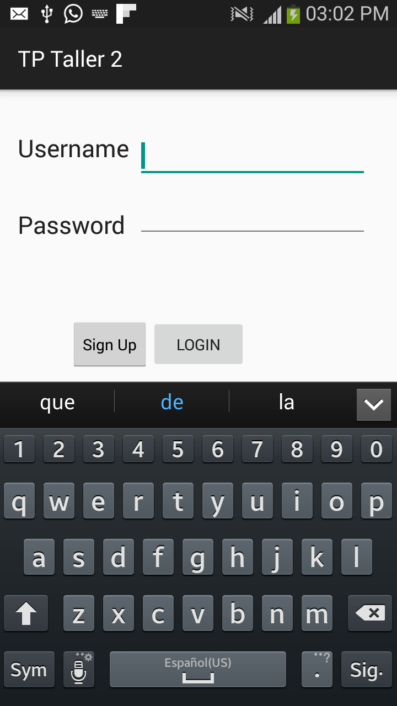{kind=link}
2. Creación de usuario¶
Ingrese sus datos y presione Sign up, luego la aplicación validará que no haya otro usuario con su mismo identificador.
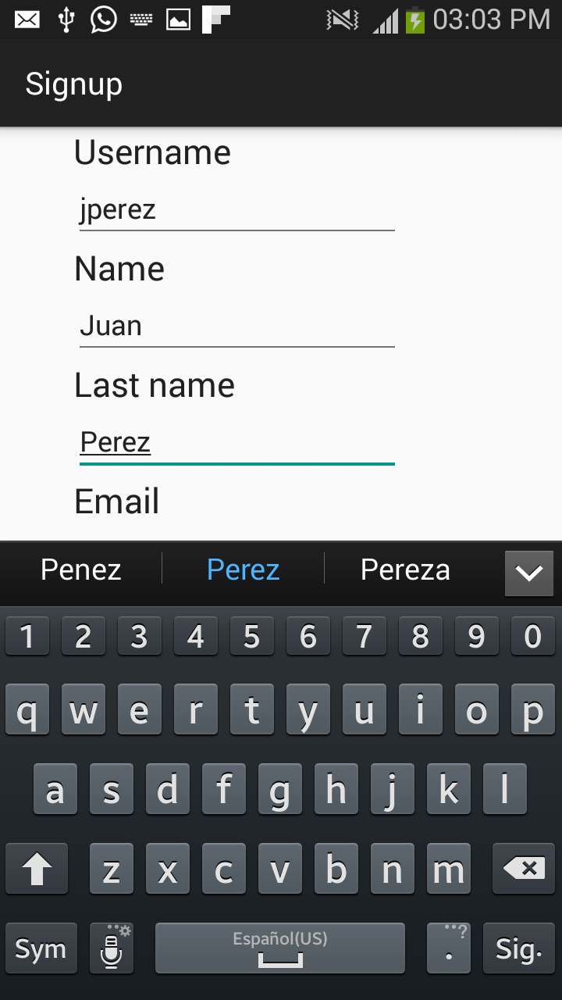{kind=link}
{kind=link}
4. Opciones generales¶
Click en el boton Propiedades del celular y podrá apreciar el menu de opciones generales
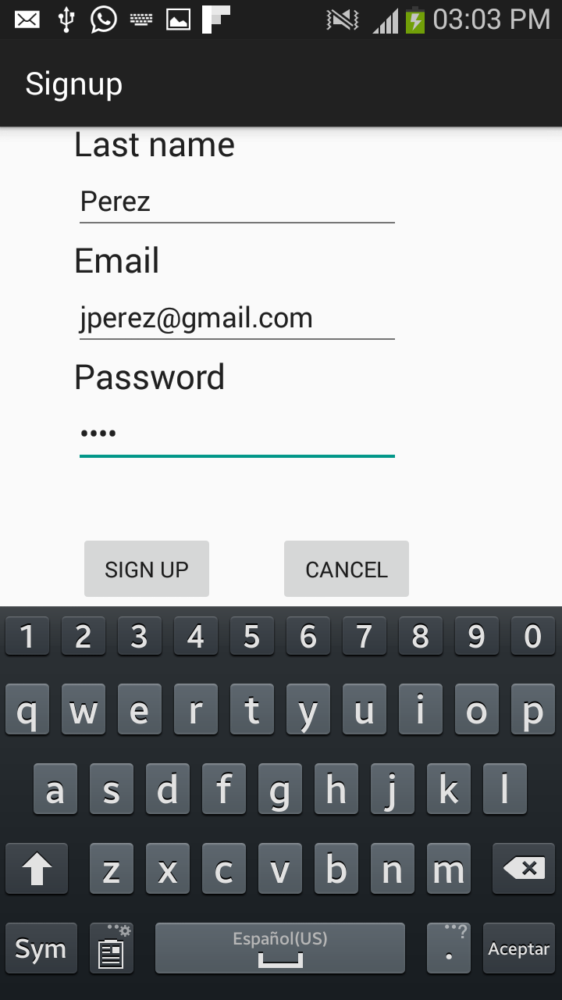{kind=link}
5. Subir nuevo archivo¶
En el menú de opciones general acceder a la opción de Subir Archivo
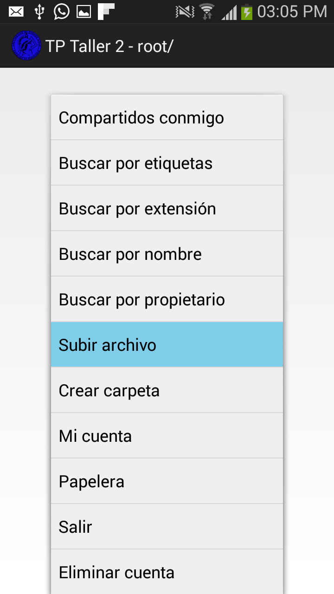{kind=link}
Seleccione archivo:
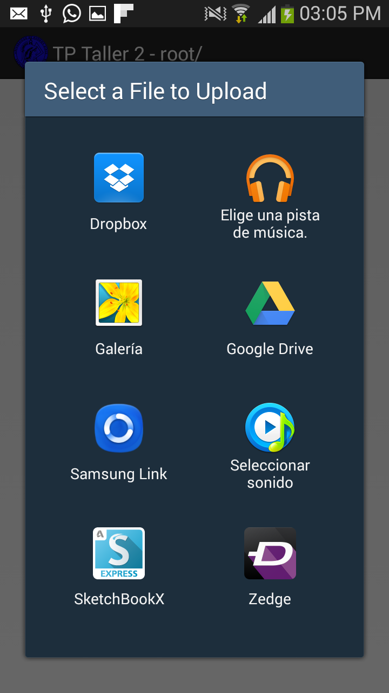{kind=link}
Verá su nuevo archivo en la pantalla inicial:
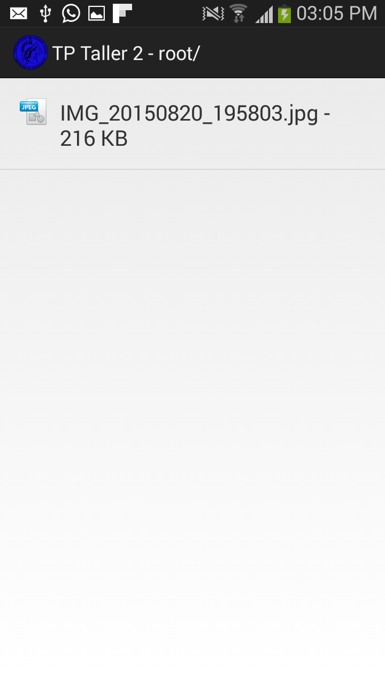{kind=link}
6. Visualizar versiones del archivo¶
Seleccione el archivo y mantenga el dedo presionado sobre el mismo hasta que se displiege el menú con opciones y seleccione Versiones.
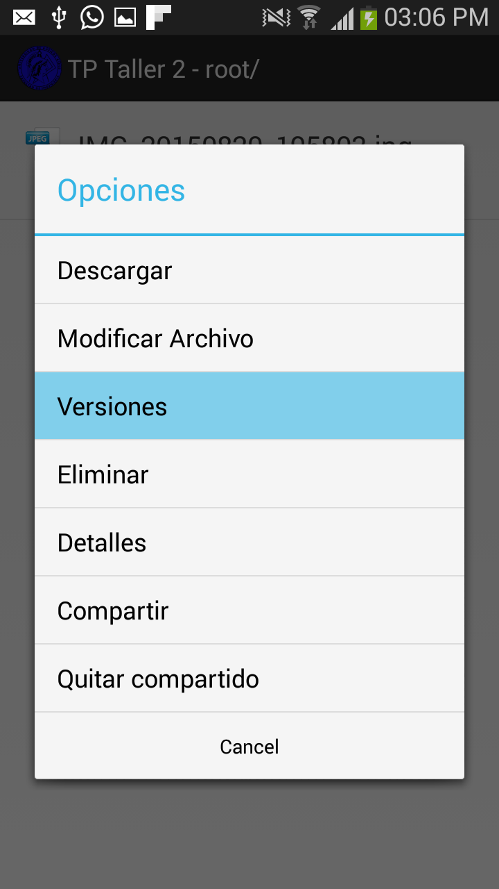 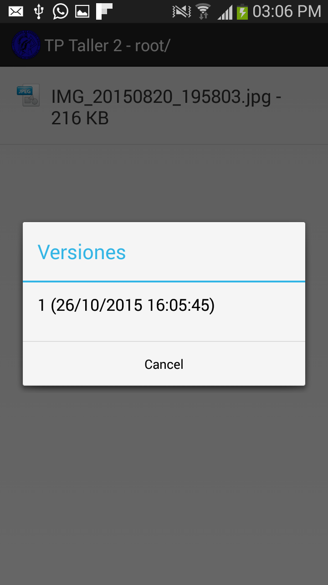{kind=link}
{kind=link}
7. Ver los detalles de un archivo¶
Seleccione el archivo y mantenga el dedo presionado sobre el mismo hasta que se displiege el menú con opciones y seleccione Detalles.
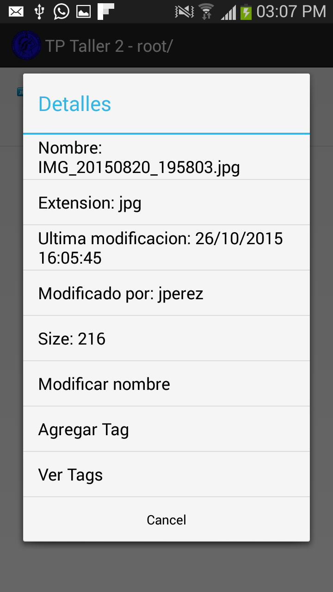{kind=link}
8. Agregar Tags a un archivo¶
Seleccione el archivo y mantenga el dedo presionado sobre el mismo hasta que se displiege el menú con opciones y seleccione Tags.
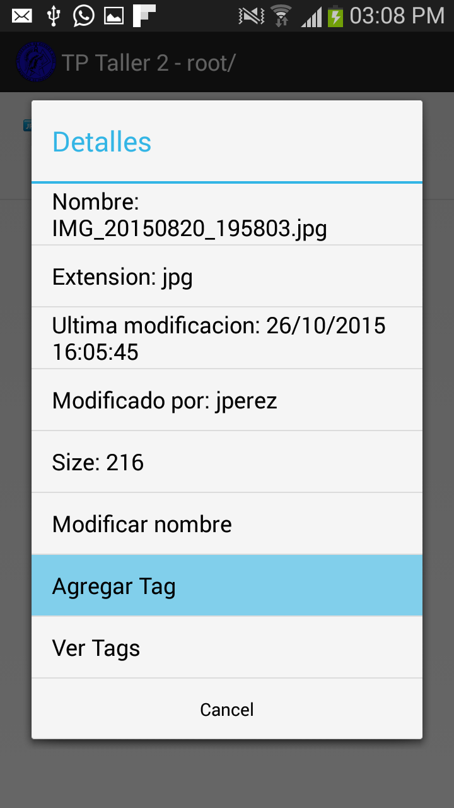 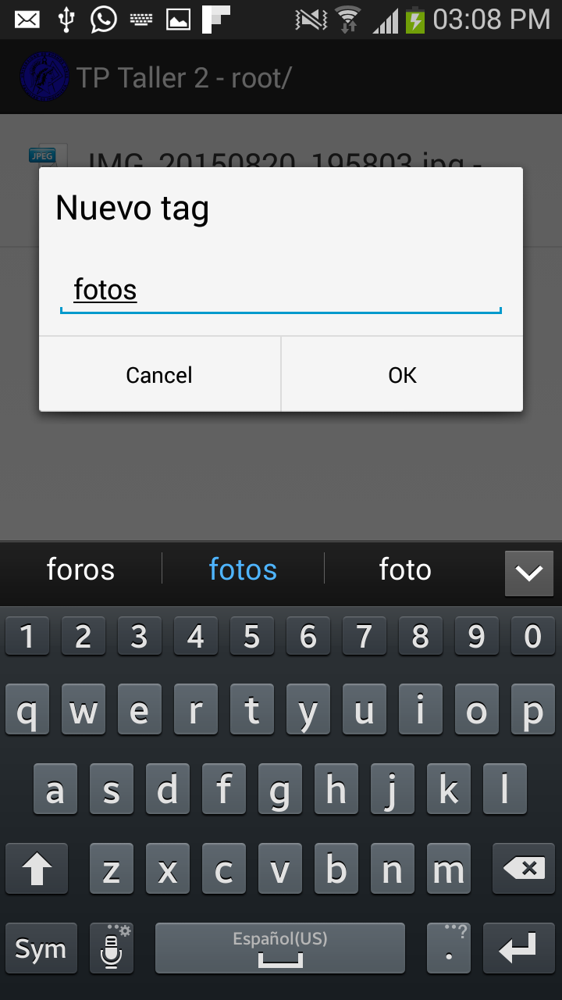 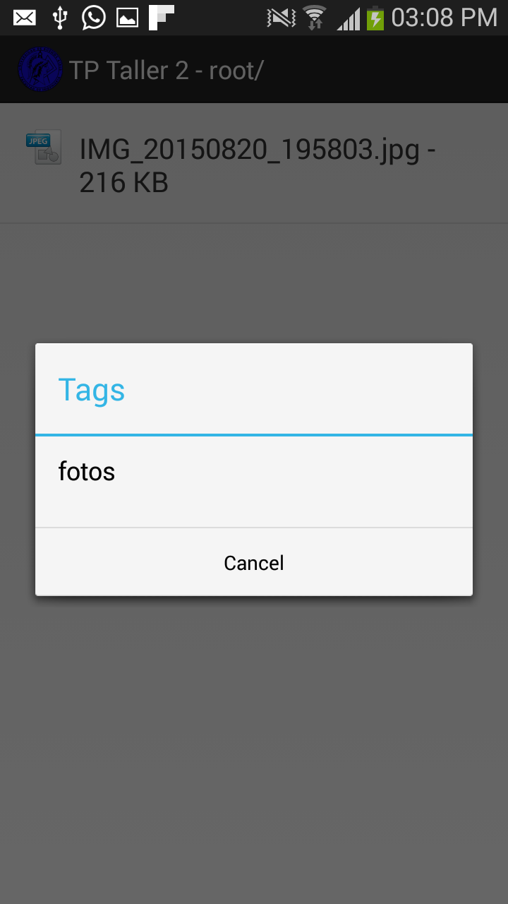{kind=link}
{kind=link}
{kind=link}
9. Modificar nombre de archivo¶
Seleccione el archivo y mantenga el dedo presionado sobre el mismo hasta que se displiege el menú con opciones y seleccione Modificar nombre.
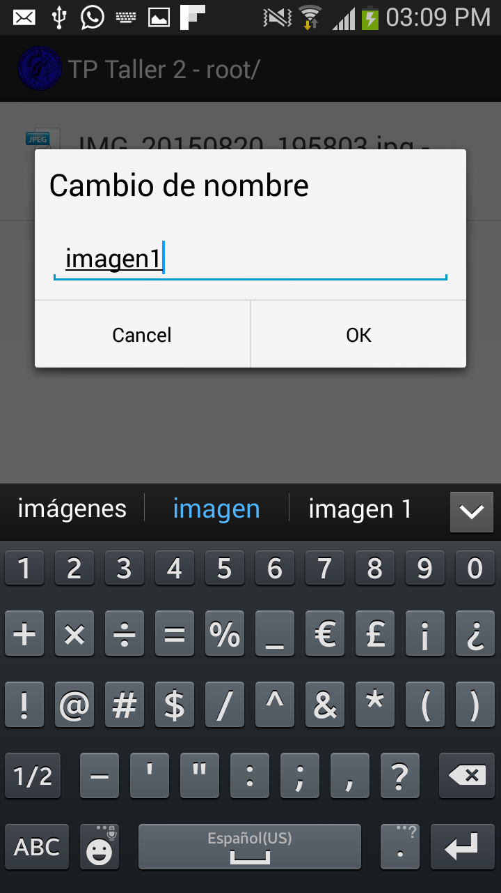{kind=link}
10. Compartir archivos¶
Seleccione el archivo y mantenga el dedo presionado sobre el mismo hasta que se displiege el menú con opciones y seleccione Compatir
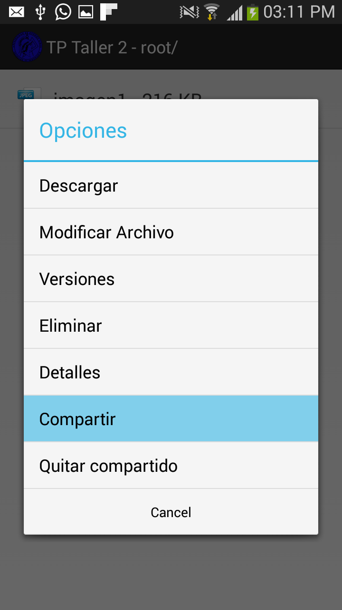{kind=link}
Seleccione usuario
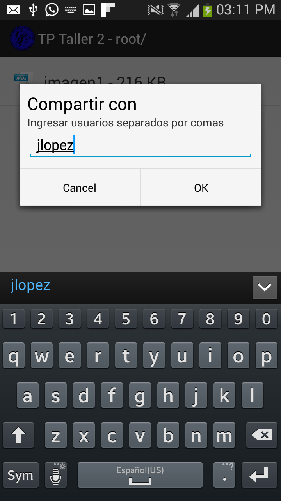{kind=link}
11. Visualizar archivos compartidos¶
En el menú de opciones generales seleccionar Compartidos conmigo:
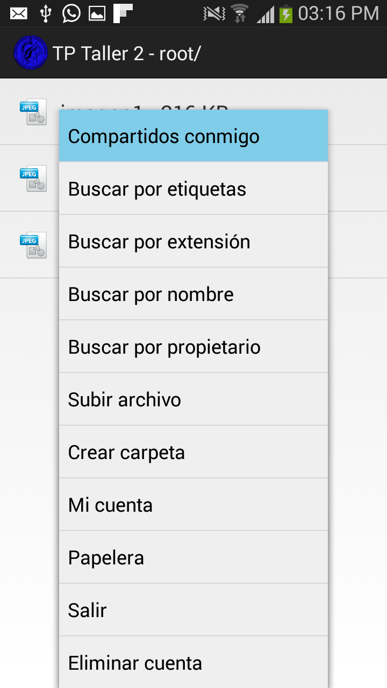 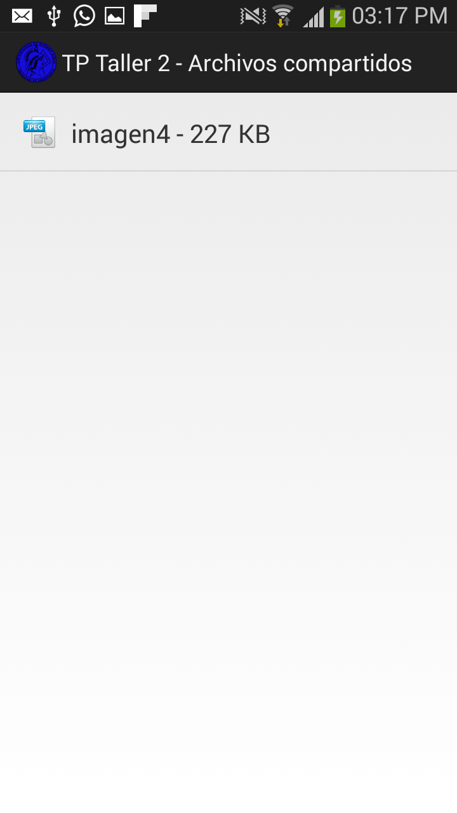{kind=link}
{kind=link}
{kind=link}
{kind=link}